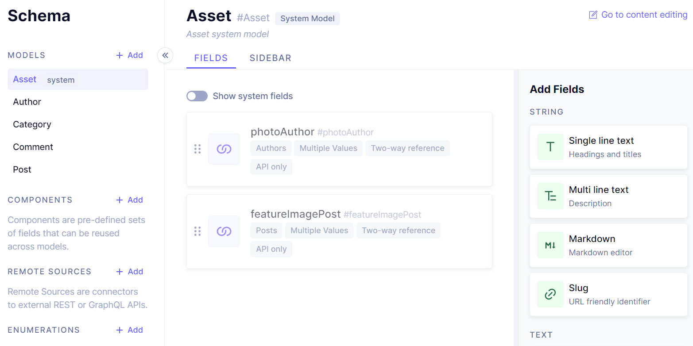

Artblog
- POK
- 2022-2023
- temps 1
- dev
- nextjs
- js
- front
- back
- CMS
- React
- Tuncay Bilgi
Pok Un site chez moi. But : Suivre un tutoriel pour créer un blog utilisant du React et Next.js
Tout le code de mon projet est disponible sur mon repo GitHub et le tutoriel est disponible ici
Compétences acquises lors du PoK :
-
Compétences :
- Front-End
- API
- Back-End
- Utilisation de framework
- Utilisation d'un Headless CMS
-
Languages :
- .Jsx => un mélange de JavaScript et de xml pour pouvoir écrire des component React intuitivement.
- .ts => Typescript : ajout de types a JavaScript pour faire moins d'erreur.
- graphQL => un query language qui vient remplacer REST. Il permet de chercher des données dans une base compatible.
-
Frameworks :
- Front : React
- Back : Next.js
- BDD + CMS
Résultat :
Un Blog qui peut être mis à jour sans toucher au code dans lequel on peut publier des posts contenants du texte, des liens, des commentaires...
Le Blog peut être publié sur Vercel (qui fonctionne spécialement bien avec Next.js) qui s'occupe de tout et qui possède un Free tier.
Fonctionnement du projet :
Un site de base possède 3 composantes :
- un Frontend
- Un Backend
- Une base de données
Ces trois éléments communiquent de la sorte : Le backend va chercher des ressources dans la base de données et les envoie au frontend pour qu'il puisse les afficher à l'utilisateur. Normalement, pendant le développement, le backend et la base de données sont stockés en local sur la machine du développeur.
Ici, nous utilisons un Headless CMS qui est un Content Managing Service :
Le CMS fait office de base de données pour nous. Il nous permet de créer et d'alimenter une base de données en LowCode. Il s'occupe aussi de servir la base de données. Ainsi, si 'lon a besoin de faire une requête, nous allons directement interroger l'API du CMS.
Cela permet d'enlever une grande partie du travail, qui concerne la mise en place de la base de données, et la création de routes qui vont questionner cette base.
Ici, le but était d'utiliser un CMS pour que plusieurs personnes puissent alimenter le Blog sans toucher au code source et sans nécessiter le redéploiement de l'application.
Ce que je retiens du projet :
Méthode d'apprentissage :
L'utilisation d'un tutoriel por apprendre a coder est efficace, elle permet de coder tout en étant guidé. Cependant, on prend vite l'habitude d'être guidé et il faut faire des efforts pour expérimenter de soi-même sinon l'on ne comprend pas vraiment ce que l'on écrit.
Résultat final :
Le blog est assez esthétique et il est surtout fonctionnel. J'ai gagné une bonne compréhension de comment fonctionne React, Next.js, graphQL et comment communiquer avec un HeadlessCMS.
Cependant, j'aurais aimé faire plus de Backend, mais d'un coté le HeadlessCMS à retiré une plus grande partie du travail que prévu, et de l'autre, je n'ai pas eu le temps d'implémenter tous ce que je voulais.
On peut voir ici l'interface du CMS avec mon schéma de données :
Ici des captures d'écrans de mon blog avec des publications test :
Détail des sprints :
Il y a au total deux sprints de 1 semaine et demi :
- Entre le début et la mi-Pok
- Entre la mi-Pok et la présentation finale
Début -> Milieu
-
Ce que j'ai fais :
-
Définir les technologies à utiliser
-
Définir un projet qui me serait potentiellement utile
-
Commencer le site pour arriver sur une version présentable avec la page de garde.
-
Faire le schéma pour la BDD.
-
Ce que je n'ai pas eu le temps de faire :
- Faire du Back
- Expérimenter par moi même en proposant une mise en page différente de celle du tutoriel
-
D'où viennent les différences ? :
- Le tutoriel est à un rythme très soutenu qui laisse peu de place aux modifications.
- Passer trop de temps à définir mon projet.
- Je n'ai pas pu faire de Back car il n'y en a pas besoin dans le blog avec un CMS.
-
A faire pour le prochain sprint :
- Terminer le tutoriel
- Alimenter le blog
- Ajouter une fonctionnalité qui nécessite du Back : Authentication ou Envoie de Mail automatique.
Milieu -> Fin
-
Ce que j'ai fais :
-
Finir le tuto
-
adapter le front
-
D'où viennent les différences ? :
- J'ai été beaucoup plus actifs dans ma suivi du tutoriel.
- Temps d'autoformation pour apprendre à utiliser les React Hooks.
- Passer plusieurs heures à debugger des erreurs:
- erreurs de syntax
- erreurs d'hydration
- erreurs avec les requêtes à la base de données
-
Idée pour la suite ? : J'aimerais publier mon site sur un serveur sans utiliser vercel, car vercel fait tout tout seul et ça n'est pas le but. Peut être créer un docker pour le projet ? Il faudrait aussi terminer les fonctionnalités qui n'ont pas été ajoutées et mettre du contenue.
Même si le tutoriel ne dure que 3h, il est beaucoup plus long à implementer soi-même, surtout si l'on prend le temps de bien comprendre les choses et si l'on a pas toutes les connaissances pré-requises. Pour ma part, je n'avais jamais fait de Tailwind, Next, React ou GraphQL